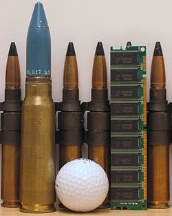

0 mm caliber is a specific size of popular autocannon ammunition. The dividing line between smaller-caliber weapons, commonly called "guns", from larger-caliber "cannons" (e.g. machine gun vs. autocannon), is conventionally taken to be the 20 mm round, the smallest caliber of autocannon. All 20 mm cartridges have an outside projectile (bullet) diameter and barrel bore diameter of approximately 0.787 inches (20.0 mm). These projectiles are typically 75 to 127 mm (3–5 in) long, cartridge cases are typically 75 to 152 mm (3–6 in) long, and most are shells, with an explosive payload and detonating fuze.
Weapons using this caliber range from anti-materiel rifles and anti-tank rifles to aircraft autocannons and anti-aircraft guns.
